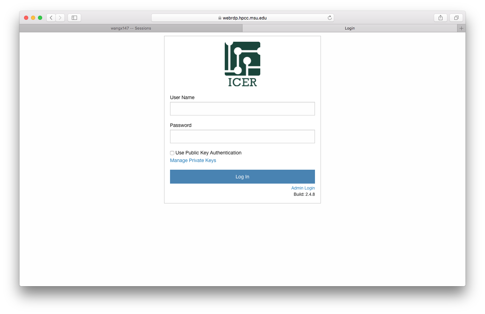
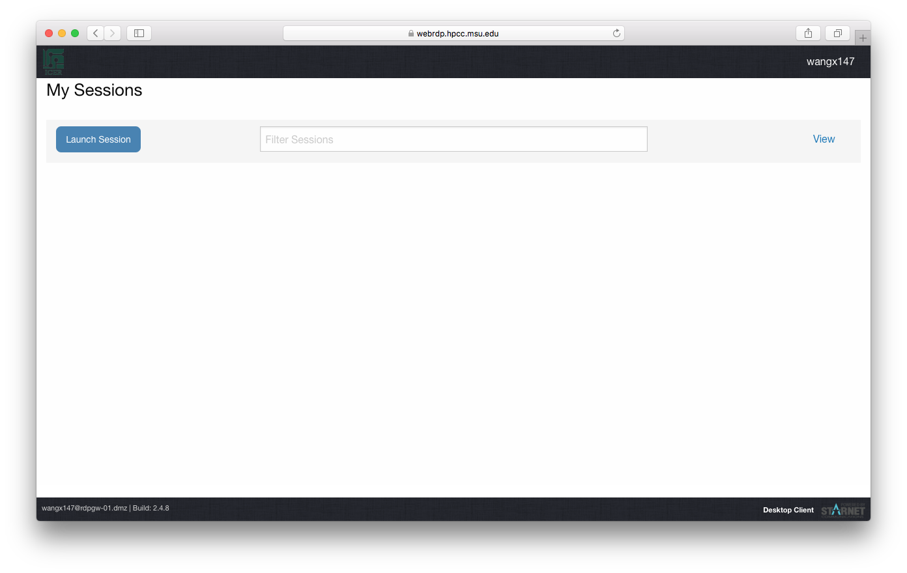
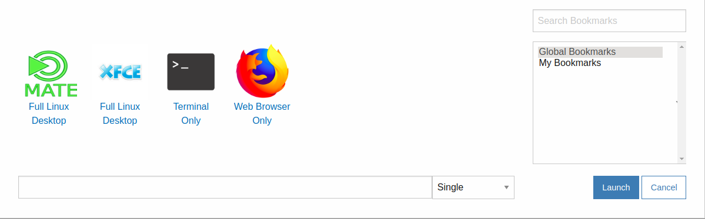
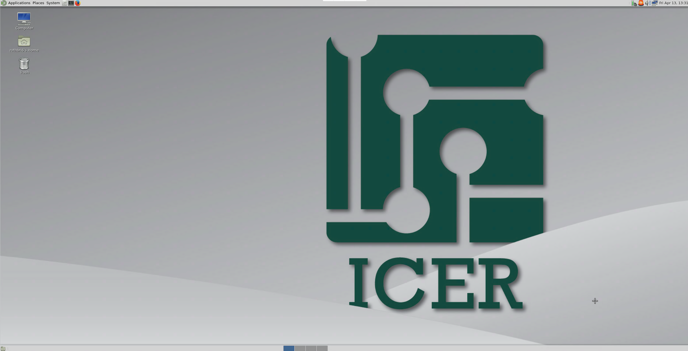
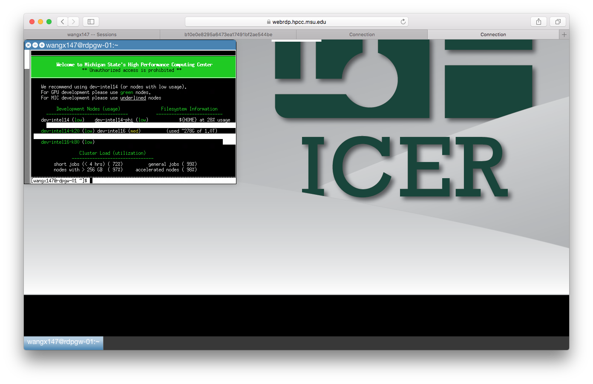

Web-based Remote Desktop Protocol
HPCC offers a way for users to connect to the main systems using the Web-based Remote Desktop Protocol for users who are more comfortable using a desktop environment, or are otherwise having issues connecting via SSH. Users only need to have a browser install on their machines in order for this feature to function.
Connecting to HPCC via web browser
First, users need to open a web browser on their local machine, and connecting to the web site https://webrdp.hpcc.msu.edu. It will ask for user name and password.
Input your MSU NetID and password and then click on "Log In" button to get connection.

After you are connected, the page showing the available session types look like the following at the first time.

Click on "Launch Session" button, a pop-up window show the several choices of sessions:
Mate Desktop
Xterm terminal (Termial only)
Firefox (Browser only)

You can select your choice by click on the icon, then click the button "Launch" to launch the session.
Warning
Opening both Mate desktop and XFCE desktop at the same time will cause the sessions to crash as well as possibly causing your web browser to crash.
Desktops Available
Mate Desktop:
Note
Mate desktop is intended to be the default desktop environment. The terminal quick launch icon is configured to start Xterm by default, so that the users complete profile will load. If you would like to use one of the other available terminals you will need to enable the login shell option. Please see below for instructions.

Other Bookmarks:
Xterm (Terminal Only):
This option will open a single terminal only. You may then launch any futher applications you may need from the terminal.

Firefox (Web Browser only):
This optoin will open a web browser only.
Session Actions
Detatching from a session
- The web based remote desktop will allow for detatching from a session, while still leaving the session open. This allows for you to resume your work, or continue your work if you are disconnected.
- To detatch from a session simply close your web browser window containing that session
Note
Sessions will automatically close after 12 hours, if a user is not attached to the session
Reattaching to a session
- To reattach to a session, log into the web remote desktop if needed, in the sessions browser tab click the session you would like to access.
Ending a session
- To end a desktop session simply logout of the desktop environment
- To end a terminal session type "exit" or "logoff"
- To end a web browser only session simply close the web browser
Terminating a session
If any session will not close or you no longer need a session it can be terminated from the sessions web broser tab
-
Select the checkbox next to the session or sessions you would like to terminate
-
Click the Actions button
-
Select terminate
Note
Please note that it may take thirty seconds to a minute for some sessions to terminate
Enabling a login shell on a terminal program:
Mate Terminal:
- Open MATE Terminal from the applications menu.
- Select Edit from the terminals menu bar
- Select Profile Preferences from the drop down menu
- Select the Title and Command tab
- Make sure the checkbox next to "Run command as a login shell" is checked.
- Close terminal and restart
Features of the Web-based Remote Desktop
The Web-based Remote Desktop functions as the same as the Remote Desktop Client:
- You can run Graphical-based programs without needing to setup a X11 instance on your local machine.
- You can submit jobs from the RDP Gateway just like our regular Gateway.
- If your connection is interrupted, your session will remain active in the background. When you reconnect, you will be placed right back into your remote session.
Conflict issue with Conda
If you have Anaconda (or Miniconda) installed in your home space,
the dbus commands in Anaconda (or Miniconda) bin path will conflicts
with those in /usr/bin. If your Anaconda is set auto-activated, launch
to Remote Desktop will fail with error messages. In order to avoid this
issue, please run the command:
conda config --set auto_activate_base false
on a dev node to stop activating Anaconda automatically. Please also refer to Module Setup for Anaconda for how to set up and start your installed Anaconda.
Troubleshooting:
If you are getting errors when starting a session please open a ticket and provide the errors you received.